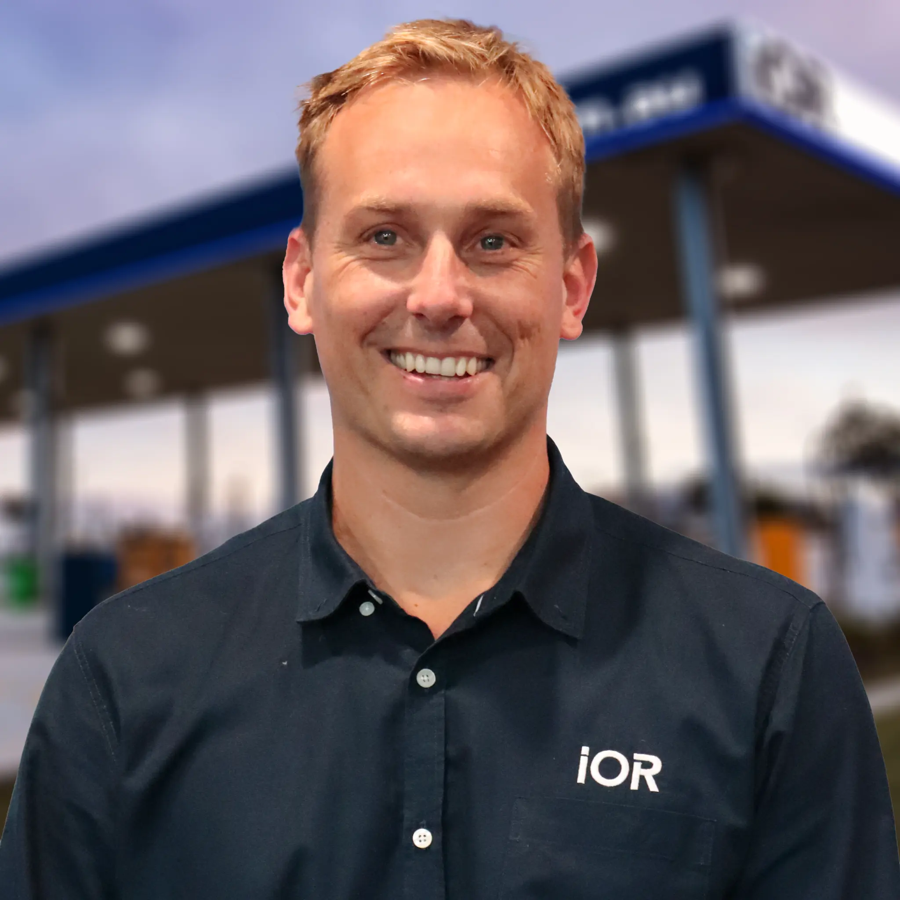
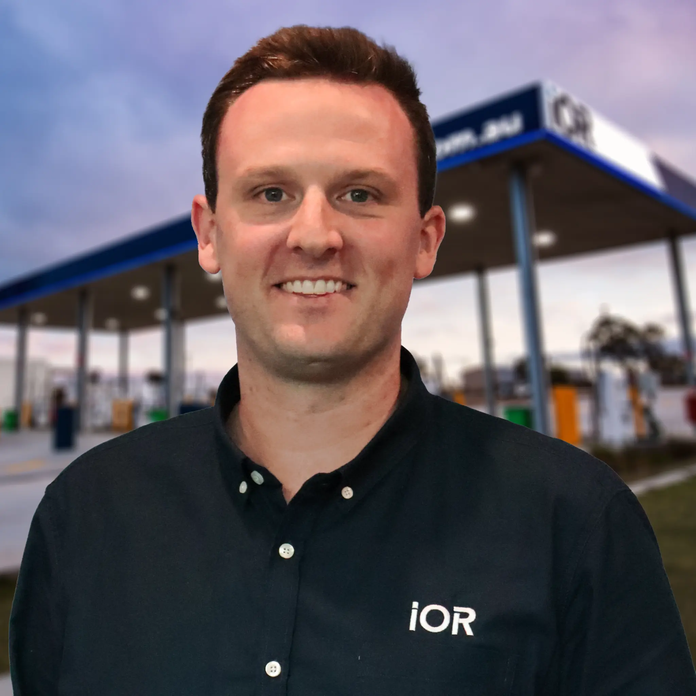
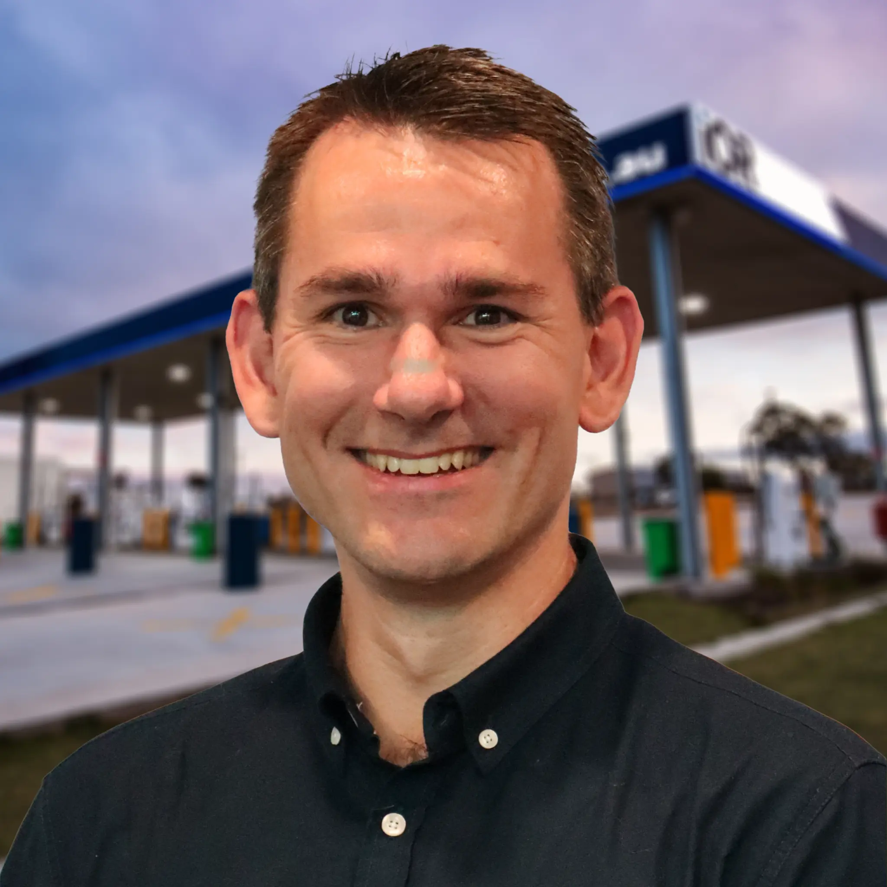
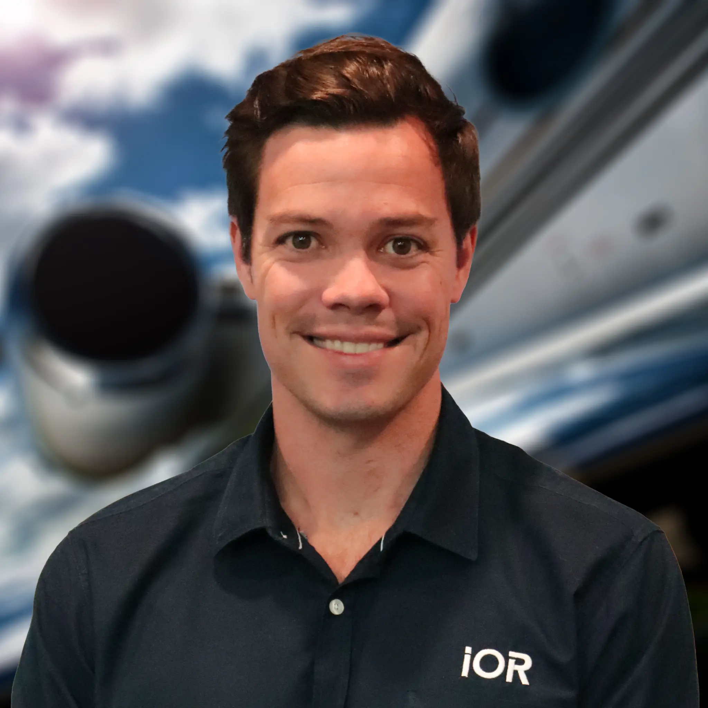
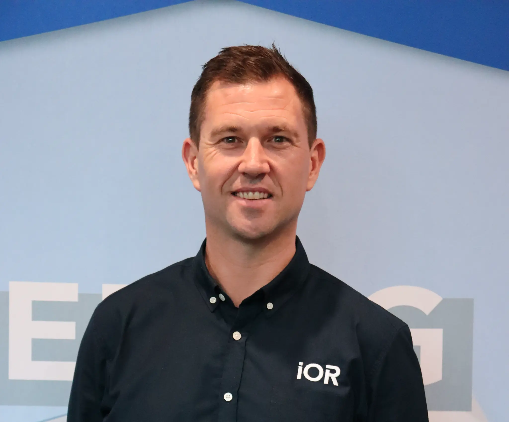
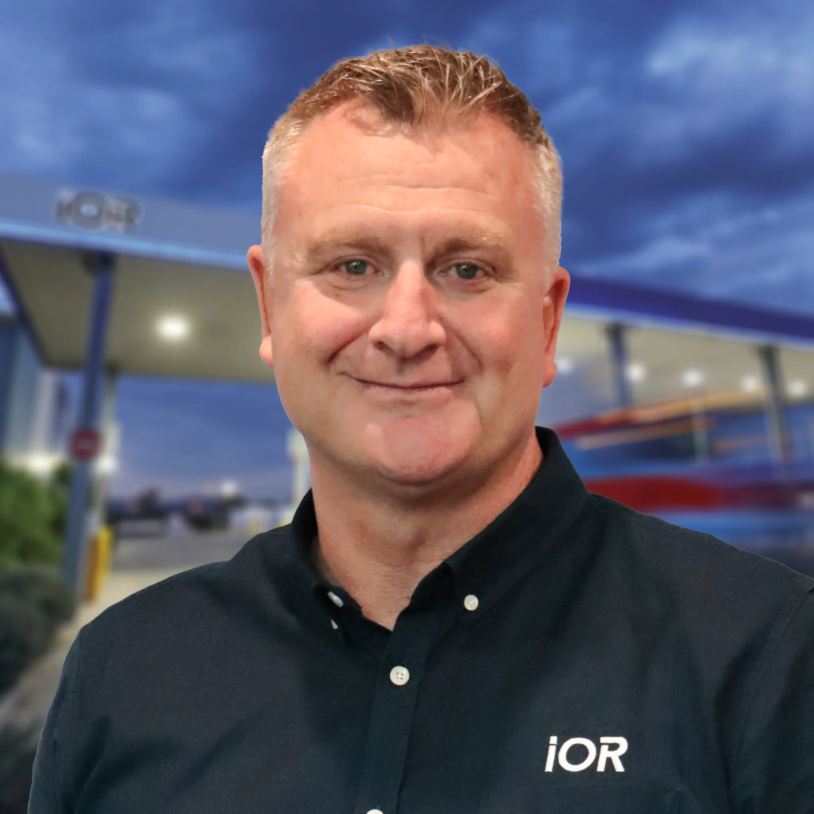

Module 09a · Our Leadership · V1
Grid of profile cards with expand/collapse bio. Ordered: CEO → EA → COO → CFO → CSO → GMs alphabetically. Headshots use actual provided images where available. Click card to expand full bio.
About IOR · Our Leadership
The team that keeps Australia fuelled.
IOR's executive team brings together deep industry expertise, operational rigour, and a genuine commitment to the customers and communities that depend on us.
Leadership HeroIMAGE PLACEHOLDERIOR leadership team, professional setting, Brisbane HQ
👥
500+ Team MembersAcross Australia
🇦🇺
100% Australian OwnedFamily-founded, still independent
📅
40+ YearsOf industry experience
🏆
Stonepeak-BackedInfrastructure capital partnership
Executive Team
Meet the people behind IOR.
Click any profile to read their full bio.

Drew Morland
Chief Executive Officer
At the heart of everything IOR does is a commitment to the customers, communities and industries that keep Australia moving — and no one embodies that more than Drew.
With over 20 years in the Australian fuel industry, Drew's career is a testament to what happens when deep operational knowledge meets genuine customer focus. He joined IOR as a sales representative and has worked his way through every part of the business — from the front line to the boardroom. As CEO, Drew leads IOR's national growth strategy, its infrastructure investment programme, and its ongoing mission to be the most reliable fuel company in Australia. He is a Director of the Australian Institute of Petroleum and holds a Bachelor of Business from QUT.
👤Headshot TBC
Angelique Oliver
Executive Assistant to the CEO
Angelique is the person who keeps IOR's executive team connected, organised, and able to focus on what matters most: delivering for customers and communities.
As Executive Assistant to IOR's leadership, Angelique plays a vital role in ensuring the business runs smoothly at the highest level. Her work spans executive coordination, stakeholder management, and the kind of behind-the-scenes operational support that allows IOR's leaders to focus on strategy, customers, and growth. Angelique brings professionalism, discretion, and a genuine commitment to the IOR team to everything she does.

Drew Leishman
Chief Operating Officer
When you work with IOR, the seamless experience you get from fuel supply through to infrastructure and delivery is a reflection of Drew's work behind the scenes.
As COO, Drew is responsible for ensuring that every part of IOR's operations is built to serve customers reliably, safely, and at scale. His remit spans logistics, infrastructure, technology, and the day-to-day operational performance of IOR's national network. Drew joined IOR with a background in supply chain and operations management across the energy and resources sectors, and has been instrumental in building the operational systems that underpin IOR's growth.
👤Headshot TBC
Adriaan Esterhuizen
Chief Financial Officer
Adriaan joined IOR in 2026, bringing with him a career built on transforming complex, multi-billion dollar businesses through disciplined financial leadership.
A Chartered Accountant with extensive experience across energy, infrastructure, and resources, Adriaan brings the financial rigour and strategic thinking that IOR's next phase of growth demands. His background spans CFO and senior finance roles across major Australian and international businesses, with a track record of building finance functions that are genuinely business-enabling rather than purely compliance-focused.

Nick Mackenzie
Chief Strategy Officer & Public Officer
Nick shapes the future of IOR — identifying where the business needs to go and building the partnerships, capabilities, and strategies to get there.
His remit spans group and business unit strategy, acquisitions and partnerships, and IOR's role as a sovereign Australian energy infrastructure company. Before joining IOR, Nick spent over 12 years as a consultant at Bain and Company, working with businesses across Australia, the Philippines, South Africa, and the UK. That global perspective — applied to a proudly Australian business — gives IOR a strategic edge that is rare in the fuel industry.

Bryce Morland
General Manager, Aviation
For the tourism operators, agricultural businesses, and regional communities that depend on aviation fuel, Bryce is the person working to ensure their supply is always there.
As GM of Aviation at IOR and a qualified Commercial Pilot, Bryce brings a perspective that is rare in fuel supply: he understands aviation from both sides of the bowser. His leadership of IOR's aviation business spans the national Avgas and Jet A-1 network, airport fuelling services, bulk aviation delivery, and IOR's growing international aviation footprint. Bryce is passionate about the role aviation plays in connecting regional Australia and is committed to ensuring IOR's network keeps those connections alive.

Chris Werfel
General Manager, Supply & Trading
Chris is responsible for making sure IOR has the right fuel, in the right place, at the right price — so customers can always count on supply.
Based across Singapore and Brisbane, Chris leads IOR's supply and trading function as well as IOR Terminals, bringing a global market perspective to a proudly Australian business. His role sits at the intersection of commodity trading, logistics, and infrastructure — ensuring that IOR's owned terminals and refinery are optimised to deliver supply certainty for customers regardless of global market conditions.

Daniel Roberts
General Manager, Ground Fuels
Daniel is the person IOR's Ground Fuels customers rely on to deliver. Make sure the right fuel reaches the right customers, reliably, every time.
His role spans IOR's national diesel network, on-site refuelling services, bulk diesel delivery, HyBlue™ AdBlue®, and lubricants — the full suite of ground fuel products that keep Australia's transport, mining, agriculture, and construction sectors moving. Daniel brings a deep understanding of what large fleet operators and industrial customers actually need from a fuel partner: reliability, simplicity, and a single point of accountability.
👤Headshot TBC
Colin Quinn
General Manager, Infrastructure
Colin is the person behind the physical backbone that makes IOR's fuel network possible — tanks, technology, fuelling infrastructure, manufacturing facilities.
The assets that customers and communities depend on to access fuel reliably are Colin's responsibility. His team designs, builds, installs, and maintains the infrastructure that underpins IOR's entire service offering — from self-bunded storage tanks at remote mine sites to the fuelling systems at regional airports. Colin brings engineering rigour and a customer-first mindset to every infrastructure decision IOR makes.
👤Headshot TBC
Hamish Jarrett
General Manager, Technology
The technology that IOR's customers interact with — and the systems that keep IOR's operations running reliably — are Hamish's domain.
As GM of Technology, Hamish leads IOR's digital and technology agenda with a clear focus: build scalable, reliable systems that make IOR easier to do business with and harder to leave. His remit spans HyDip™ FMS, the FuelCharge app, the Customer Portal, and IOR's internal operational technology stack. Hamish brings a product mindset to enterprise technology — focused on outcomes for customers, not just technical capability.
👤Headshot TBC
Marty Corry
General Manager, Logistics & Distribution
When fuel needs to move — whether by road, sea, through a refinery, or via an import terminal — Marty makes it happen.
As GM of Logistics and Distribution, Marty oversees every link in IOR's supply chain, from marine cargo imports and terminal operations through to last-mile delivery across IOR's national network. His background spans transport leadership at IOR, risk engineering at NTI, and a management contract with Chevron in Central Queensland — giving him a perspective that spans both the commercial and operational dimensions of fuel logistics.
👤Headshot TBC
Nell Bond
General Manager, Customer, Marketing & Digital
Nell leads the teams responsible for making sure every customer interaction — digital, loyalty, or brand — is seamless, valuable, and worth coming back for.
In an industry built on reliability, Nell's job is to make sure IOR's brand, digital presence, and customer experience are as dependable as the fuel itself. She has spent her entire career in customer-obsessed, digitally driven organisations — building her foundation in affiliate and loyalty marketing before moving into senior marketing and digital leadership roles. At IOR, she is driving the transformation of how the business connects with customers across every touchpoint.
👤Headshot TBC
Mark Philippi
General Manager, People, Culture & Safety
The experience IOR's customers receive starts with the people behind it. Mark's responsibility is to attract, develop, and support the 500-strong team that keeps IOR moving.
As GM of People, Culture and Safety, Mark oversees the entire people portfolio including talent acquisition, learning & development, employee relations, HSEQ, payroll & remuneration, risk and organisational design. He is building the kind of culture where people feel proud to come to work — and where safety is not a compliance exercise but a genuine expression of how IOR looks after its team.
👤Headshot TBC
Linda Miller
General Manager, Business Optimisation & Analytics
Linda's role is about making IOR work better — for customers, for the business, and for the communities IOR serves.
As GM of Business Optimisation and Analytics, she draws on data, financial insight, and deep operational understanding to identify where IOR can improve, grow, and create more value. An FCPA and GAICD-credentialled leader, Linda has held CFO and senior finance roles across transport (XL Express), agriculture (North Australian Pastoral Company), and multiple senior positions across the energy sector.
👤Headshot TBC
Liz Inder
General Manager, Legal & Company Secretary
Liz brings an exceptional depth of industry knowledge to IOR's legal function — and a perspective that goes well beyond pure legal counsel.
Having spent nearly 17 years as an in-house solicitor at Freedom Fuels, Liz understands the fuel industry from the inside out. A QUT law graduate, Liz joined IOR as Head of Legal in early 2025, bringing with her a rare combination of long-standing industry expertise and practical, business-focused legal thinking. In a sector where regulatory complexity is a constant, Liz's ability to translate legal risk into commercial reality makes her an invaluable part of IOR's leadership team.
We own the infrastructure. We won't run out.
IOR is not a reseller. We own Lytton Terminal, Port Bonython Terminal, and the Eromanga Refinery — Australia's only inland crude oil refinery. When global supply chains tighten, our customers don't feel it. That's what sovereign supply actually means.